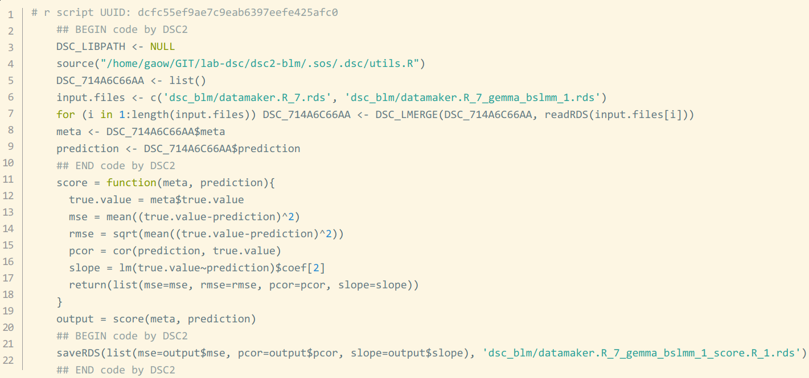

Debug in DSC
Module executable and generated script
As seen from previous tutorials, the module executables in DSC are in fact incomplete due to lack of input data and parameter specifications to run. Under the hood, DSC generates R, Python or Shell scripts based on module executable scripts, adding to it specification of module parameters and pipeline variables, then executes the complete script. This generated script is subject to two types of errors:
- Inconsistency between DSC interface and module executables
- Error from module executables as provided
In the presence of errors DSC will fail. However the automatically generated script will be saved to disk and will be pointed to you as part of the error prompt on the command console so that you can reproduce and fix the bugs.
Here we look at this toy example. We undermine the setup to demonstrate the 2 types of errors we have discussed.
Buggy DSC interface
To demonstrate inconsistency between interface and module we change the first block of DSC script from:
normal: R(x <- rnorm(n,mean = mu,sd = 1))
mu: 0
n: 100
$data: x
$true_mean: mu
to:
normal: R(x <- rnorm(n,mean = mu,sd = 1))
nu: 0
n: 100
$data: x
$true_mean: mu
creating a parameter nu, a typo of mu, that does not exist in normal module rt.R. Consequently the required mu variable for these routines will not be provided by DSC interface. We save this configuration file as first_error_v1.dsc and run it:
cd ~/GIT/dsc/vignettes/one_sample_location_debug
dsc first_error_v1.dsc -o dsc_result
INFO: DSC script exported to dsc_result.html
INFO: Constructing DSC from first_error_v1.dsc ...
INFO: Building execution graph & running DSC ...
[ERROR: Command 'Rscript .sos/normal_0_0_5b69d818.R' returned non-zero exit status 1.
##############] 15 steps processed (15 jobs completed)
ERROR: [21ba7975-8686-4984-af28-09f2b8c83fa3]: [normal]:
Failed to execute Rscript .sos/normal_0_0_5b69d818.R
exitcode=1, workdir=/home/gaow/Documents/GIT/dsc/vignettes/one_sample_location_debug, stderr=dsc_result/normal/normal_1.stderr
---------------------------------------------------------------------------
[DSC]: Workflow exited due to failed step a_normal (a_normal).
WARNING: Files in green in the error prompt above contains codes and error info to help debug.
Scripts upstream of the error can be found in dsc_result.scripts.html.
INFO: Elapsed time 4.896 seconds.
The error message is a bit wordy but the part most relevant to debugging are highlighted in green color on your terminal. In this case multiple generated scripts have failed, but the cause is likely the same. You can try to resolve the problem starting from the last error message and see if the fix will help with other errors.
You can also see that a file called dsc_result.scripts.html is generated. It bundles generated scripts from all module instances involved in the benchmark up to the point the errors occur.
Debug with the problematic script
As prompted in the error message, let’s see what’s inside dsc_result/normal/normal_1.stderr:
cat dsc_result/normal/normal_1.stderr
Error in rnorm(n, mean = mu, sd = 1) : object 'mu' not found
Execution halted
Okey so what’s going on? Let’s take a look at this script:
cat .sos/normal_0_0_5b69d818.R
## r script UUID: 89241936
DSC_REPLICATE <- 1
n <- 100
nu <- 0
TIC_C1997B87 <- proc.time()
set.seed(DSC_REPLICATE + 89241936)
## BEGIN DSC CORE
x <- rnorm(n,mean = mu,sd = 1)
## END DSC CORE
saveRDS(list(data=x, true_mean=mu, DSC_DEBUG=dscrutils::save_session(TIC_C1997B87, DSC_REPLICATE)), 'dsc_result/normal/normal_1.rds')
It seems like the line x <- rnorm(n,mean = mu,sd = 1) looks for variable mu, which was not previously defined in the script. We know from the DSC script that we had set nu not mu. So obviously there is a glitch on the interface which can be fixed by changing nu to mu in the DSC script.
In practice when you run into problems that you cannot immediately tell what is going on from err file or script file, you should load the problematic script .sos/normal_0_0_5b69d818.R to some interactive session, try to debug and fix the script from there (do not worry about changing this script), test until it works. Then you should have learned where the problem is, and you can apply what you’ve learned to patching DSC script or the original module code. Fixing these generated scripts is not enough as they will be overwritten next time DSC runs.
Buggy module script
Now let’s undermine the module code instead. We change from:
mean: R(y <- mean(x))
to
mean: R(y <- "meow")
As you can probably tell, this will not result an error for this module, but may impact downstream ones. So let’s find it out!
dsc first_error_v2.dsc -o dsc_result
INFO: DSC script exported to dsc_result.html
INFO: Constructing DSC from first_error_v2.dsc ...
INFO: Building execution graph & running DSC ...
[################ERROR: Command 'Rscript .sos/sq_err_0_9fcb14a9.R' returned non-zero exit status 1.
##ERROR: Command 'Rscript .sos/abs_err_0_c33b79b0.R' returned non-zero exit status 1.
WARNING: Removing dsc_result/abs_err/t_1_mean_1_abs_err_1.rds generated by failed step abs_err.
#ERROR: Command 'Rscript .sos/abs_err_0_afedb9d0.R' returned non-zero exit status 1.
#ERROR: Command 'Rscript .sos/sq_err_0_4888d737.R' returned non-zero exit status 1.
WARNING: Removing dsc_result/sq_err/t_1_mean_1_sq_err_1.rds generated by failed step sq_err.
] 24 steps processed (20 jobs completed, 4 jobs ignored)
ERROR: [38a1aade-66fd-45e5-a87d-5ecc8710eb7e]: [sq_err]:
Failed to execute Rscript .sos/sq_err_0_9fcb14a9.R
exitcode=1, workdir=/home/gaow/Documents/GIT/dsc/vignettes/one_sample_location_debug, stderr=dsc_result/sq_err/normal_2_mean_2_sq_err_2.stderr
---------------------------------------------------------------------------
[8e70c4f4-ef5e-4957-88e6-e352cd3e0f81]: [abs_err]:
Failed to execute Rscript .sos/abs_err_0_c33b79b0.R
exitcode=1, workdir=/home/gaow/Documents/GIT/dsc/vignettes/one_sample_location_debug, stderr=dsc_result/abs_err/t_1_mean_1_abs_err_1.stderr
---------------------------------------------------------------------------
[c8dc53a9-e837-44ae-9c29-43eaa4361e47]: [abs_err]:
Failed to execute Rscript .sos/abs_err_0_afedb9d0.R
exitcode=1, workdir=/home/gaow/Documents/GIT/dsc/vignettes/one_sample_location_debug, stderr=dsc_result/abs_err/normal_2_mean_2_abs_err_2.stderr
---------------------------------------------------------------------------
[651ba0a5-fed0-49e3-8824-de7110f233a2]: [sq_err]:
Failed to execute Rscript .sos/sq_err_0_4888d737.R
exitcode=1, workdir=/home/gaow/Documents/GIT/dsc/vignettes/one_sample_location_debug, stderr=dsc_result/sq_err/t_1_mean_1_sq_err_1.stderr
---------------------------------------------------------------------------
[DSC]: Workflow exited due to failed steps a_abs_err (a_abs_err), b_sq_err (b_sq_err), e_abs_err (e_abs_err), f_sq_err (f_sq_err).
WARNING: Files in green in the error prompt above contains codes and error info to help debug.
Scripts upstream of the error can be found in dsc_result.scripts.html.
INFO: Elapsed time 4.544 seconds.
So there are multiple module failures. In case like this we should check and fix the first one first. Same as before, we check:
cat dsc_result/abs_err/t_1_mean_1_abs_err_1.stderr
Error in x - y : non-numeric argument to binary operator
Execution halted
It is not immediately clear what is going on, so we examine the code .sos/abs_err_0_0_73c4c826.R by adding a couple of print commands before the line in question:
## r script UUID: 90107557
DSC_A0BFA20F <- list()
DSC_A0BFA20F <- dscrutils::load_inputs(c('dsc_result/normal/normal_1.rds','dsc_result/mean/normal_1_mean_1.rds'), dscrutils::read_dsc)
DSC_REPLICATE <- DSC_A0BFA20F$DSC_DEBUG$replicate
x <- DSC_A0BFA20F$est_mean
y <- DSC_A0BFA20F$true_mean
TIC_A0BFA20F <- proc.time()
set.seed(DSC_REPLICATE + 90107557)
## BEGIN DSC CORE
print(x)
print(y)
e <- abs(x - y)
## END DSC CORE
[1] "meow"
[1] 0
Error in x - y: non-numeric argument to binary operator
Traceback:
It looks like x, instead of being a number, is a string meow. Therefore the line e <- abs(x - y) is doomed to fail. We know from the DSC script that x comes from an upstream module group analyze, that somehow returned meow as output. We can also see from this script that the variable comes from one of 'dsc_result/normal/normal_1.rds','dsc_result/mean/normal_1_mean_1.rds'. From our knowledge of the DSC script we know it should come from 'dsc_result/mean/normal_1_mean_1.rds' the mean module. Therefore there is nothing we can do in the current script to fix the problem.
Debugging with upstream scripts
Now we want to find out what has produced the problematic x variable. That is, we want to find the module instance that generated 'dsc_result/mean/normal_1_mean_1.rds' from which x is loaded. However the problematic script above did not tell us where this data comes from. This leads us to examine other scripts in the benchmark that leads to the error, in dsc_result.scripts.html.
You can open up this file in your web browser, and search (ctrl-F) for the phrase dsc_result/mean/normal_1_mean_1.rds. This leads you to the following:

Unsurprisingly, running these code by itself produces no error message – this is expected because otherwise DSC would have failed at this stage. However we know from previous investigation that the output does not look right. For this example we can spot instantly that the meow string somehow 🐱 replaced the code for location parameter estimation; and we can fix it easily. In practice, one may need to load both this code chunk and the previous .sos/abs_err_0_0_73c4c826.R to an interactive session, fix it until .sos/abs_err_0_0_73c4c826.R works, and apply the knowledge learned to the original module line mean: R(y <- "meow") in the DSC script.
More output info
The run-time information are kept in greater when running DSC with verbosity level greater than 2. Though typically unnecessary, if you still cannot fix issues at this point it may help re-running benchmark with -v 4 and look into the screen output (or, redirect them to a file) for more run-time information to help performing diagnostics.